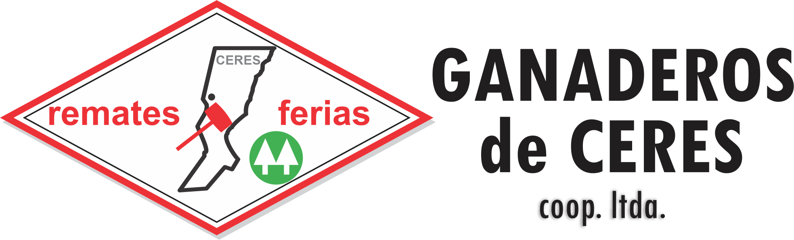

Unidad de Negocios 1
Trabajamos junto a la Cooperativa Agrícola y de Consumos Ltda. SANTA ROSA para ofrecerte soluciones ágiles y confiables.


Para acceder a la cuenta corriente online, es necesario contar con un usuario y contraseña. Si aún no tenés tu usuario, solicitálo en la sucursal más cercana.
Instructivo para acceder a cuenta corriente onlineTrabajamos junto a la Cooperativa Agrícola y de Consumos Ltda. SANTA ROSA para ofrecerte soluciones ágiles y confiables.
Subastas presenciales con transparencia, trayectoria y la mejor comercialización.
Operaciones directas entre productores con respaldo y asesoramiento profesional.
Genética de calidad en eventos destacados para mejorar tu rodeo.
Accedé al mercado televisado más importante del país con alcance nacional.
Remates destacados con grandes volúmenes y oportunidades únicas.
